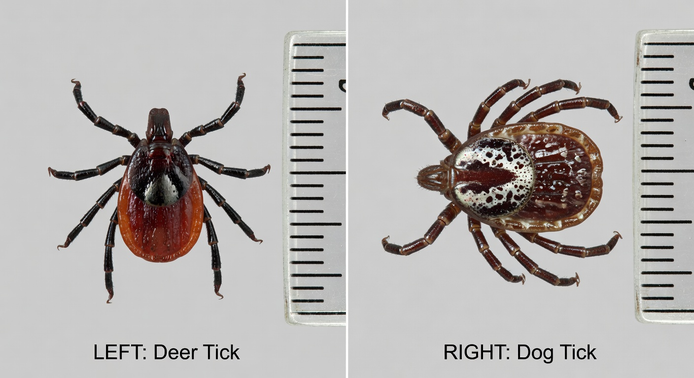

Hey Devin — this page is just for you. It’s super simple and tells you exactly what to watch for after the tick bite.
You probably had a deer tick on you (we’re not 100% positive it was a deer tick, but it looked like one). You got it off quickly and it was flat. That’s really good. The chance of any problem is very low.
Here’s a comparison so you can see the difference:

Left (deer tick / black-legged tick): Much smaller (poppy-seed size when unfed), dark brown/reddish body with a solid dark scutum behind the head, plain body, black legs.
Right (American dog tick): Noticeably larger, brown with ornate white/silver markings and patterns on the back.
Look at the bite spot and how you feel every day for the next 30 days. Tell Dad right away if you notice any of these:
If you see any of the things above, or if anything just feels wrong, tell Dad the same day. It’s always better to check early.
You did a great job getting it off yourself while it was still flat. That’s the best possible outcome. Most kids never have any issue after a bite like this.
Next time, try to keep the tick in a sandwich bag so we can show the doctor if needed.